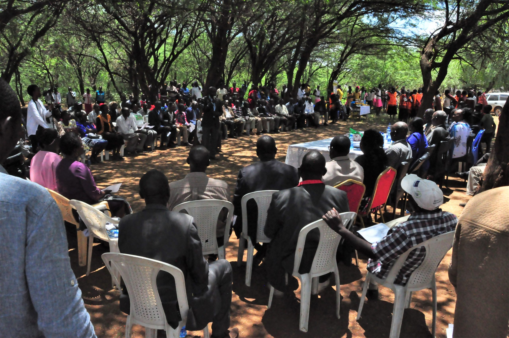

Researcher | Volunteer | Disaster Risk Reduction | Climate Resilience | GIS & Remote Sensing
Working at the intersection of disaster management, climate change adaptation, geospatial science, and community resilience to solve environmental and socio-ecological challenges.
I am a dedicated researcher specializing in disaster risk reduction, climate resilience, and geospatial applications. Holding a Master of Disaster Management (CGPA 3.86/4.00) and a Bachelor of Disaster Management (CGPA 3.67/4.00) from the University of Dhaka, my work combines empirical field surveys, remote sensing, and hydro-geomorphological modeling to address critical climate vulnerabilities[cite: 1].
My research philosophy centers on bridging data-driven spatial analysis with grassroots human vulnerability to generate evidence-based policy solutions for vulnerable communities.
Evaluating multi-hazard risks, disaster preparedness, and community vulnerability dynamics.
Studying socioeconomic impacts, heatwaves, and local adaptation mechanisms.
Applying GEE, satellite imagery, and spatial regression to environmental monitoring.
Analyzing sediment yield, channel shifting, and bankline dynamics in river basins.
Assessing drinking water security and quality across coastal and hilly multi-ethnic areas.
Investigating spatiotemporal dynamics of forced internal displacement in coastal zones.
Methodology: RUSLE Soil Loss Model, SDR-based Sediment Yield Estimation, GIS & Remote Sensing, Satellite Imagery.
Study Area: Lower Teesta River Basin, Bangladesh.
Investigated soil erosion and sediment transport using geospatial models to support river management.
Methodology: Spatiotemporal dynamics, Household surveys, Statistical analysis.
Study Area: Coastal Belt, Bangladesh.
Analyzed socioeconomic vulnerabilities and displacement patterns linked to climate risks.
Methodology: Multi-temporal Landsat analysis, KII/FGD field assessments.
Study Area: Kazipur & Chauhali, Sirajganj.
Mapped riverbank erosion trends and evaluated long-term impacts on riverine community livelihoods.
Project: Gender Responsive Health Care System in Bangladesh: Addressing the Dual Burden Challenge of Climate Change and Health Inequities. Focus on proposal development, qualitative field data collection (FGD, KII, IDI), and facility assessment.
Agro and Hydrometeorology Lab. Executed research on sediment yield assessment along the Lower Teesta River Basin using GEE, Python, and InVEST software.
Investigating fluvial-geomorphological mechanics across transboundary river systems.
Evaluating knowledge and adaptation capacities among urban informal workers.
Field data collection and training needs assessments for UDMC and WDMC members.

Drinking WaterConducting FGDs and KIIs on Reverse Osmosis and Pond Sand Filter usage in coastal districts.
Assessing community relocation and erosion vulnerabilities along the Jamuna River.
Open for research collaborations, academic inquiries, and international PhD opportunities.
Send Email DirectlyInstitute of Disaster Management and Vulnerability Studies, University of Dhaka
+8801346066410